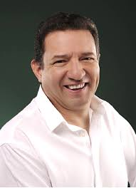

|  |
Biografía
Gerardo Reyero es un actor de doblaje mexicano que comenzó su carrera en 1989.
En películas estadunidenses ha prestado su voz para actores como John Malkovich,
Liam Neeson, Steven Segal, Andy Garcia, Jim Carrey, Jeremy Irons, entre muchos otros.
Gerardo Reyero ha hecho el doblaje de varias series y películas animadas como Lilo &
Stich (2002), en donde hace la voz de Gantu, y en X-Men, serie animada de los años noventa,
donde da voz a Cíclope. También hizo la voz de Han Solo en el redoblaje de la trilogía original
de Star Wars y en varios otros proyectos de la franquicia. Ha realizado el doblaje de personajes
de anime como el de Tuxedo Mask en Sailor Moon, el de Eo de Scylla y Asterión de perros de caza en
Los caballeros del zodiaco, así como la de Maito Gai en Naruto. Es más conocido por ser la voz del
villano Freezer en Dragon Ball Z, así como en varias de las películas de la franquicia, incluyendo
Dragon Ball Super: Broly. |